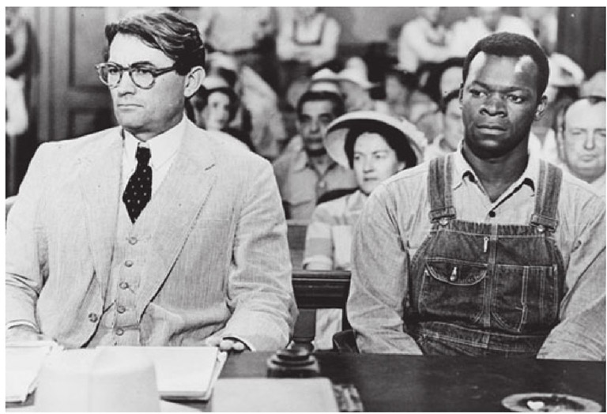
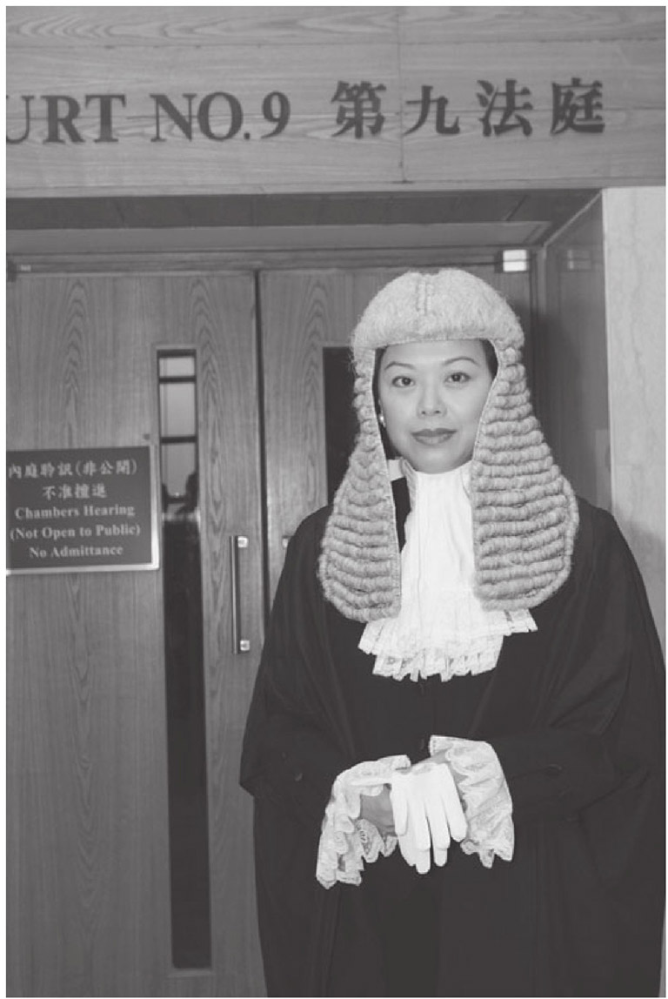
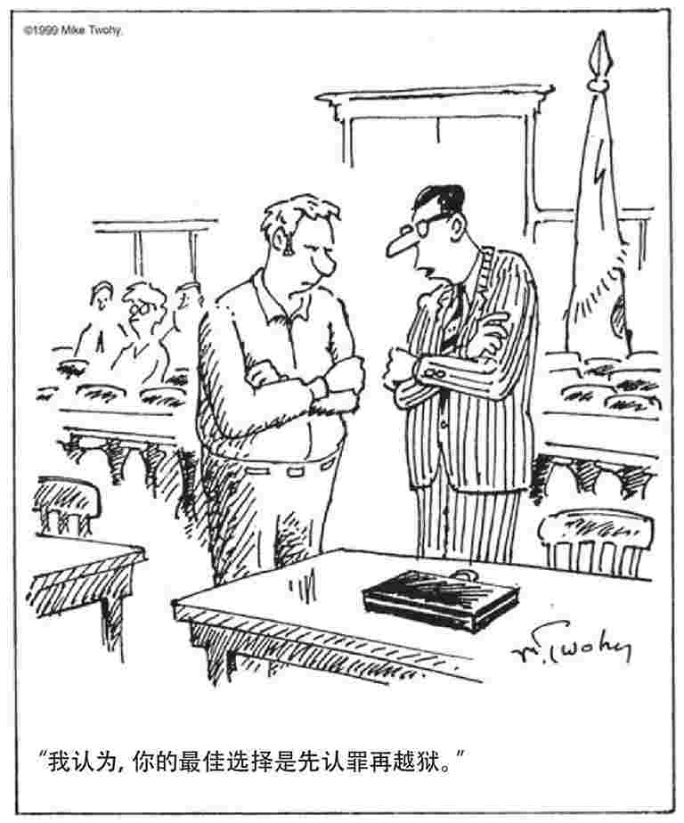

律师是一个发达的法律制度中必不可少的角色，即使他们也许并不受人喜爱。他们常受到贬损、嘲笑和毁谤。许多关于律师的笑话中的幽默元素，来自它们对律师的唯利是图、不诚实和麻木不仁的攻击。一个笑话是：“你怎么知道律师在说谎？”答案是：“他的嘴皮子在动呢。”另外一个笑话讽刺地哀叹：“怎么99%的律师都在败坏这个职业的名声，这是不是太丢人了？”马克·吐温则因为这句俏皮话而声名远播：“有趣的是，近来罪犯的人数大有增长，律师也是，不过我说重复了。”
大多数国家里，这种厌恶来自对法律职业的合理不满和误解，试图解释这种厌恶并没有什么意义。当然这是个事实：和房产中介一样，律师得不到什么喜爱。但是，独立的律师行业是法治至关重要的组成部分。如果没有律师为公民提供充分的代理服务，法律制度的理念只是空洞的回响。通过在刑事案件中提供法律援助的方式，大多数法域承认了这一观点。举例来说，法律援助是欧洲人权公约第六条所确认的权利。它要求被告应当具有法律顾问，如果他们自己请不起律师，那么应当给他们免费提供一名律师。
好莱坞在无止境的电视剧集中不停重复的、对英雄式律师的塑造——充满激情、雄辩滔滔地为客户追求正义——其实与律师的现实生活相去甚远。出庭辩护虽然很重要，但它只是律师工作中的一小部分。大多数律师每日忙于起草文件（合同、信托、遗嘱和其他文件），向客户提出建议，进行谈判，转让财产，以及从事其他不那么迷人的工作。尽管大多数律师从来没有踏进过法庭一步，律师工作的精华依然在于代表客户进行战斗。在这样的战役中，言辞或书面形式的辩护技巧至关重要。法律经常是战争，而律师则是战士。

图14 阿提库斯·芬奇：根据小说《杀死一只知更鸟》制作的同名电影中的英雄律师，由格利高里·派克饰演。芬奇为一位黑人被告作了并不成功的辩护，这位被告被控强奸白人女性。许多美国律师声称，这一角色激励了他们从事律师职业。
普通法律师
对于很多人来说，英国的法律职业，以及在前英联邦国家的普通法法域中存在的变种，看起来有些奇异——怪异夸张和古董级的假发、长袍，以及刻板严格的称呼方式。尽管有些普通法系国家已经去除了这些奇怪的、古旧的特征，但是它们仍然引人瞩目地持续出现在人们面前，尤其是在英格兰。在执业者和公众中进行的民意测验并没有得出一致的结果。假发仍然会牢牢地戴在许多出庭律师和法官的头上，至少还要戴上一段时间。
豪华假发
先生：当然，法律职业的假发不合时宜。但是圆顶小帽、主教法冠、四角帽、熊皮帽、学位帽以及其他仪式性头饰也是如此。我认为假发的好处在于模糊身份和掩饰老朽之处，这一点已经见诸报端。然而，它真正的重要性在于传承。对于像我这样的家事律师来说，它是一根连续不断的金线，可以追溯到1857年伟大的法典与卢欣顿博士之前，直到奇妙的18世纪家庭法领域。不管我是在伦敦的上诉法院出庭，在开曼群岛的上诉法院出庭，还是在中国香港地区的上诉法院出庭，法院仍然有着佩戴假发进行审理的传统。就我所知，此地尚未作出在民事上诉案件中废除假发的决定，而且我反对任何这样的提议。
王室法律顾问尼古拉斯·莫斯廷，
泰普尔，伦敦EC4。来信栏目，《观察家》，2007年6月23日
当然，普通法法律职业的起源已经与英国的历史交织在一起，因此合乎逻辑并不必然是它存在的合理理由。律师主要被划分为两大类别：出庭律师与事务律师。出庭律师（经常被称为“法律顾问”）只占法律职业群体的一小部分（在大多数法域内为10%左右），而且不论正确与否，出庭律师被视为法律职业者中更为优越的一支，他们自己尤其这么认为。近年来，相当彻底的变化正在发生，很多变化逐渐取消了出庭律师们的特权。在很大程度上，对于日益高涨的法律服务费用的政治焦虑引发了这些改革，而这种高涨是由出庭律师们的限制性商业惯例所导致的。
出庭律师与他们“潜在的客户”之间，只存在最低程度的直接接触。事务律师向出庭律师进行“情况汇报”，而且通常的要求是，出庭律师在会见客户或者与客户面谈时，事务律师必须在场。但是对于某些职业会有例外，比如会计师与鉴定人可以在事务律师不在场的情况下与出庭律师会面。不过，所有的交易都必须通过事务律师来完成，他们负责支付出庭律师的相关费用。
英国的出庭律师被四个律师公会之一授予出庭律师资格。自从16世纪以来，这四个古老的机构就控制着这一职业分支的准入。与这一职业中绝大多数的事务律师不同，出庭律师拥有完整的出庭权利，他们可以在任何一级法院出庭。一般来说，事务律师只有在级别较低的法院才有出庭的权利，但是近年来，这一态势已经有所改变。有些具有“出庭事务律师”资格的事务律师，可以代表他们的客户在级别较高的法院出庭。传统的分隔制度正在逐渐瓦解。但是，两类律师之间仍然存在着两大明显区别。第一，出庭律师总是直接接受事务律师的指令，而非从客户那里获得指令，客户直接接触的仍然是事务律师。第二，与事务律师不同，出庭律师独立执业，并且被禁止合伙。相反，出庭律师通常组成一个个出庭律师办公室，借以共享资源、平摊费用。但是现在，出庭律师也可以为事务律师的事务所、公司或者其他机构所雇用，成为内部法律顾问。
其他的转型也在发生。比如，出庭律师现在可以为他们的服务和费用作广告——迄今为止，这是不能想象的商业侵蚀。他们的执业地点也不仅限于出庭律师办公室，在成为律师三年之后，他们可以在家里工作。

图15 尽管出庭律师的服饰经常被人嘲笑是古怪而过时的，但是在数个普通法法域内，出庭律师始终坚持使用已经穿戴了数世纪之久的假发和长袍。这一持续的传统在此有图为证：一位“穿上了丝袍”的香港高级律师，戴上了仪式性的长假发，穿上了丝袍。
这种分裂的职业一直为不少人所攻击。为什么客户实际上要向两位律师支付律师费，而在美国这样的地方，支付一份律师费就可以了呢？这个问题有其合理之处。加拿大所采取的融合两个分支的做法（魁北克地区除外），得到了一系列回应。支持维持现状的人声称，独立的出庭律师可以对客户的案件提供超然的专家意见，而且事务律师，尤其是来自小型律师事务所的事务律师专业化程度往往不足。通过利用出庭律师的一系列专业技巧，小型律师事务所的事务律师也可以和拥有大量专家的大型律师事务所相抗衡。
在数个普通法法域内，执业者合二为一。美国的律师职业就没有上述区别，所有的执业者都被称为律师。任何通过州律师资格考试的人都可以在本州的法院出庭，有些州的上诉法院要求律师获得有资格在本院提起上诉与执业的证书。为了在联邦法院出庭，律师必须获得成为该法院出庭律师的特别许可。在南澳大利亚州、西澳大利亚州和新西兰，这一职业融合也同样存在。
在有些普通法系国家（但令人惊讶的是，美国不在其列），律师最基本的一项职业守则是“不得拒聘”。根据这一守则，“如对方支付合理的费用，律师则无权拒绝在自身业务领域内执业，无论客户或客户的观点多么不受欢迎或令人不悦”。在通常情况下，出租车司机有义务让任何乘客搭乘，出庭律师也必须接受任何诉讼摘要 [1] ，除非他有合理理由加以拒绝，比如这一法律领域超出了他的专长或者经验，又或者他的工作任务让他无法为这一案件投入足够的时间。如果没有这一守则，律师也许会不愿意代理那些令人厌恶、不道德或者恶毒的被控客户，比如犯下类似猥亵儿童这样的可憎罪行的人。但是在实践中，出庭律师不难找到理由拒接诉讼摘要。除了案件涉及超出他们能力的法律领域，人为因素也一直存在：与那些棘手难缠的或者毫无希望的案件的诉讼摘要相比，有利可图的诉讼摘要更容易让他们挤出时间。不过这一守则代表着对于职业责任的坚定声明，并强调了律师作为“受雇枪手”的角色。他会毫无畏惧地代理任何客户，无论他们案件的是非曲直为何。
挑肥拣瘦
在法律职业中，我们拥有一群声望卓著、深具影响的执业者；他们的存在本应确保法律作出的、人人都能享受正义的承诺得以实现，但是他们最有利可图的工作，一直是处理富人的问题，而非接手穷人的案件……然而归根结底，考虑到法律职业的焦点通常集中于对财产的管理和保护，那么法律职业中商事类与“财产”类的工作独具魅力，也是可以理解的。因此，这一现象的成因主要在于法律本身重视中产阶层与中等偏上阶层的问题，并不惜以穷人的利益为代价，而非律师有意如此……
菲尔·哈里斯，《法律导论》，第7版
（剑桥大学出版社，2007年），第444页
普通法系律师职业训练中的突出特点，是它类似学徒制的训练方式（见下文）。事实上，直到19世纪晚期，英国的大学才开始教授法律。而美国、加拿大、澳大利亚和新西兰的大学开始有大规模的法学教育，得等到20世纪，尽管有些大学在此之前已经建立了法学院（较为著名的是1817年建立的哈佛法学院）。
大陆法系律师
大陆法系国家的律师与他们普通法系的同行之间，存在着根本的区别。事实上，在主要的大陆法系法域内，比如欧洲、拉丁美洲、日本和斯堪的纳维亚半岛，法律职业这一概念本身就是个疑问。用这一领域内一位泰斗的话来说：“普通法系中俗称为‘律师’的这一概念，在欧洲的语言里找不到对应的词汇……”大陆法系法域承认两种法律职业：法律专家与私人执业者。前者包括法学院毕业生；而与普通法系国家中律师的地位并不相同的是，后者并不代表法律职业的核心，甚至刚好相反。“法学院毕业生的其他分支在历史上、数量上和理念上，都处于较为优越的地位，包括司法官员（法官和检察官）……公务员、法学教授，以及受雇于工商企业的律师。”
大陆法系国家的法学院学生通常在毕业之后决定他们的未来。而且，因为行业内部的流动性相对有限，在很多法域内，这一选择是不可更改的。他们可能选择成为法官、公诉人、政府律师、律师或者公证人。因此，私人执业者大致可以分为法律顾问和公证人两类。前者直接与客户接触，并代理他们出庭。从法学院毕业后，法律顾问通常跟从有经验的律师，经过数年的学徒生涯之后，才开始逐渐独立执业，或者在小型律师事务所执业。
成为公证人通常需要通过国家考试。公证人起草法律文件，比如遗嘱和合同，在法律程序中对这些文件加以认证，并保管这些文件的认证记录，或提供副本。政府律师或者作为公诉人，或者作为政府机构的律师。公诉人履行双重职能：在刑事案件中，他代表政府一方为案件作准备；在特定的民事案件中，他代表公共利益。
与普通法系国家的情况相比，在大多数大陆法系法域中，国家在律师的训练、资格准入和就业方面起到了相当重要的作用。与普通法系国家的传统做法（律师通过从事学徒工作而取得资格）不同，国家控制着它准备雇用的法律专家的人数，而大学则是通往私人执业的准入资格的必经之路。
在法律教育的组织方面，两大法系存在着重大区别。大致而言，在大多数普通法系法域（英格兰和中国香港地区是明显的例外）中，法律是一个研究生学位；在澳大利亚、新西兰和加拿大，法律可能和另外一个学科的本科学位捆绑在一起。而在大陆法系国家，法律教育是本科课程。在普通法系法域内，法律教育的课程受到法律职业的有力影响；而在大陆法系法域内，国家在这一领域中处于主导地位。在大多数普通法系国家里，资格考试由法律职业自身管理；鉴于大学处于守门人的地位，进一步的考试通常是多余的，有个法律学位已经足够了。
在普通法系国家，大学的守门人功能逐渐被私人执业者的学徒制所取代。因此，举例来说，一位有追求的出庭律师必须通过资格考试，才能获得出庭律师资格。为了能够执业，他必须在出庭律师办公室里从事两期实习工作，每期的时间为半年。在指导律师（较资深的出庭律师）的指导下，实习律师参与会见事务律师，参加庭审，协助案件准备工作，起草意见，以及参与其他事务。实习律师通常没有薪水，但是现在他们可能会得到资助，以保证收入达到固定水平。在第二期为期半年的实习工作中，实习律师可以在限定范围内执业，并在权限内接受指示。出庭律师之外的私人执业律师以律师事务所成员的身份工作。律师事务所的规模不等，可以只有一名律师，也可以由数百名律师组成超级大型的律师事务所。
行业管理
律师协会、出庭律师理事会以及事务律师协会，与其他为数众多的机构一起，负责普通法律师的准入、批准、教育和管理。大陆法系则更喜欢用“辩护律师”这一术语（它更准确地描述了他们的主要职能，而相对应的机构则被称为出庭律师办公室、律师协会、律师学会或者辩护律师学院）。尽管名称不同，但是这些机构共有的职责均在于限制执业律师的人数，并维持他们的垄断地位。
在有些法域（特别是一些较小的法域，比如比利时和新西兰）之中，律师的准入与管理适用全国统一的标准。联邦制国家（比如美国、加拿大、澳大利亚和德国）则不可避免地以省或州为单位进行管理。在意大利，律师的准入以大区 [2] 为单位。
法庭上的律师
律师已经将这个案件扭曲得极为复杂，案件原本的是非曲直早已从这个世界上消失。这个案件本来是关于遗嘱和基于遗嘱的信托的——或者说，它曾经是这样。而现在，除了费用之外，它和什么都不相干。我们一直不停地出庭，退庭，宣誓，质询，提交文件，提交反驳文件，辩论，盖章，提出动议，援引文件，汇报情况，围着大法官和他的下属们团团转；为了那些费用，我们会用衡平法将自己折磨至死。费用才是最重要的问题。而其余的问题，凭借某些非凡的手段，早已消失殆尽。
查尔斯·狄更斯，《荒凉山庄》，第八章

图16 律师们只能为他们的当事人做这么多了。
在有些国家，律师管理由司法机构负责，在其羽翼之下存在着独立的法律职业；而在另外一些法域内，尤其是在大陆法系国家，律师则服从于司法部这样的政府部门的控制。
法律援助
很多社会为无力支付律师费用的人提供法律援助。如果不能向穷人提供免费的法律建议和法律援助（特别是在刑事案件中），诉诸司法的权利就相当于不存在。即使在民事诉讼中，如果富有的被告或者国家起诉贫穷的被告，最基本的公平原则也会被削弱。任何法律面前人人平等的表象都将因此而碎裂。通常情况下，无论是对于国家还是对于寻求法律援助的个人来说，相关费用的分配会倾向于援助那些受到刑事指控的人，但是有些法域也对民事诉讼提供免费的法律援助。有些法律援助制度提供的律师的工作就是专门代理那些符合法律援助资格的贫穷的当事人。另外一些制度则指定私人执业律师来代理这些当事人。
吉迪恩有得到代理的权利
吉迪恩在佛罗里达州被起诉，理由是他破坏并进入了一个台球室，并意图行为不轨。吉迪恩出庭了，他没有钱，也没有律师。他要求法庭给他指定一名律师。以下对话因此而发生：
法庭：吉迪恩先生，我很抱歉，但是在本案中，我不能为你指定一名代理律师。根据佛罗里达州的法律，只有在被告被控犯有严重罪行的情况下，法庭才可以为被告指定一名代理律师。我很抱歉，但是我不得不拒绝指定一名代理律师在本案中为你辩护的请求。
吉迪恩：美国最高法院说，我有权获得一名代理律师。
吉迪恩为他自己进行了辩护。他被判处有罪，并获刑五年监禁。然后他提起了上诉，理由是一审法院拒绝为他指定律师，相当于拒绝给予他“宪法与美国政府的人权法案所赋予的”权利。州上诉法院驳回了他的上诉。在牢房里，吉迪恩向美国最高法院提起上诉，理由是法庭拒绝为他提供代理律师，致使他根据美国宪法第十四修正案所享有的权利，在未经正当法律程序的情况下受到了侵犯。他被指派了一名杰出的律师艾比·福塔斯（之后被任命为最高法院的法官）。法院判称，获得律师的帮助是一项基本权利，这对于公正的审判来说非常重要，并据此强调了正当法律程序所需要的程序保障。被告的财力或教育水平，应当与他能否获得代理律师无关。这一案件被发回佛罗里达州最高法院重新审理，且“此后的审理不得与本判决不一致”。吉迪恩被重新审理，这次他有了代理律师，并被无罪开释。